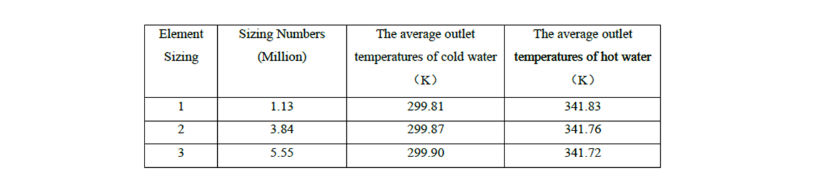
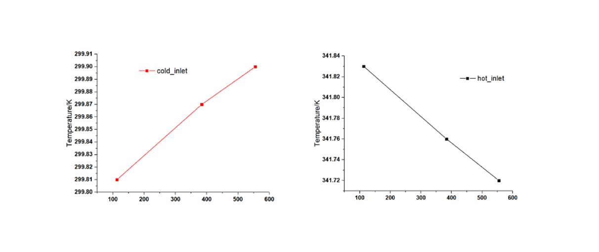

Simulations on
Heat Exchanger
using ANSYS
Mult-Physics Simulation
School of Engineering @ Rutgers University - New Brunswick
Advisor
Prof. Jonathan P. Singer
Group Memebers
Zhijing Hu
About project
During this simulation, incompressible water flow through heat exchangers is mainly studied in 3D. The steady state and transient heat transfer numerical simulation are two main focuses. Under the condition that the inlet velocities of cold water are 1m/s and 3m/s, in Fluent model, the steady-state temperature field and water flow field of the heat exchanger were calculated. The flow field and temperature field in the heat exchanger will change when the inlet velocity of cold water is increasing while keeping the inlet velocity of hot water remain unchanged. Additionally, when the inlet velocity of cold water increases, the effect of heat exchanging becomes more evident, and the temperature of water in the exchanger is relatively low. The temperature of the middle baffles is increasing much vastly during the exchanging process.
Intro
The convergence checking of calculation element sizing, time step of transient calculation and geometry are required, and reasonable element sizing and geometric model are selected based on the convergence results for the following heat exchanging simulations. The heat transfer situations inside the heat exchanger were studied by computational fluid dynamics, which uses finite volume method for discretization. The original model structure of the heat exchanger is relatively complex, the shell of the heat exchanger and the hot water pipes are all having certain thickness, and there are four internal middle baffles inside the heat exchanger.
 If the simulation is run based on the original structure, the number of element sizing of both the solid part and the fluid part would be too large to be estimated or calculated. Due to the limited resources and simulating time,
(also my hardware part), the heat exchanger model is simplified to leave only two middle baffles inside the exchanger and ignore the thicknesses of the outer shell and the pipes.
If the simulation is run based on the original structure, the number of element sizing of both the solid part and the fluid part would be too large to be estimated or calculated. Due to the limited resources and simulating time,
(also my hardware part), the heat exchanger model is simplified to leave only two middle baffles inside the exchanger and ignore the thicknesses of the outer shell and the pipes.
While working on my project, there has two main difficulties I encountered: How to simplify the model of the exchanger reasonably, at the meantime, to ensure the element sizing is generated feasibly, as well as complete the entire simulation as detailed as possible. The final time steps are 0.02s, 0.05s and 0.1s respectively using for convergence checking, since a more smaller time step requires more time in iterations for computer.
Problem Statement
As for several specific part of the problems, four main problems and corresponding explanations or solutions are listed below:
1. In order to check the convergence of element sizing, at least four sizing values of heat exchanger should be tested. However, with the increasing of sizing numbers, the calculation time also increases continuously. Therefore, due to the limitations, only three element sizing are selected and tested.
2. Similarly, with the element sizing selections, the value of time steps is finally decided as 0.001s, 0.005s and 0.01s using for the convergence checkpoint. Although the time steps should be as small as possible, due to the limitations, the final time step selections may relatively large compare to the ideal value, which may lead to some uncertainty in the following calculations and results.
3. Different simplified models are supposed to be selected and compared in the convergence checking of the geometry and all the calculation results should be compared, then the most reasonable geometric model should be selected according to the results. Due to the complexity of comparisons and simulations, only one simplified model plan carried for simulations and is used in this paper.
4. In steady-state computation, the boundary condition on pressure is used to calculate the outlet of cold water and hot water. Since the distance between outflow and the inflow is considerably short (Figure 3), which is about 1.08m, the corresponding boundary conditions may cause some influences on the calculation results.
From my personal aspects, and here are a few reflections: due to the limited understanding of heat transfer problem and the lack of familiarity with model simplification, it takes me a long time to finish the whole simulation project. Also, the theoretical knowledge of time step of transient heat transfer calculation is relatively insufficient, the final decision on time step is obtained by referring to relevant literature materials, which is listed in the references.
Methods
During the simulations, RANS (Reynolds oil-Navier-Stokes) method is used for calculation, and are solved based on Fluent model, followed by Tecplot. The fluid equations include continuity calculations, momentum calculations and energy calculations. Specific calculations are listed in my paper report.
By calculations, the thicknesses of the heat exchanger shell and the inside pipes are ignored. At the same time, in order to reduce the total number of element sizing, the two middle baffles are removed. The heat exchanger shell is set as adiabatic, without considering the heat exchanging with the external environment temperature. The metal material of the heat exchanger is stainless steel.
Assume that the heat exchanger structure is completely sealed, the water inside is set as an incompressible fluid with constant density in the following calculation process, and evaporation and condensation of water are ignored. Moreover, the heat radiation effect to the external is also ignored and only consider the internal convection and conduction of the heat.
Results
The steady state and the standard K-E turbulence model are set for the simulation. 1.13 million, 3.84 million and 5.55 million are set as the element sizing, respectively. Heat transfer calculation is carried out on these three numbers, getting the average temperatures of the hot water outlet as well as the cold one. The inlet boundary conditions are tested in velocities of both waters, as for outlet, are in pressure.
The inlet velocities of both waters are 1m/s, with the temperatures equal to 298K and 343K, respectively. The relative pressure at the outlet was zero. 
Through the calculation, with the increase of sizing numbers, the average outlet temperature of cold water outlet is increasing, absorbing the heat increases; While the average outlet temperature of hot water is decreasing, causing by the heat transferring to the cold water. When the mesh sizing is 3.84 million, continuous increasing of the sizing number has less effect on the average temperatures, which meet the requirements of convergence.  Later, more simulation results are discussed and displayed.
To know more about the details, please check my GitHub page of this project report: Simulations on Heat Exchanger.